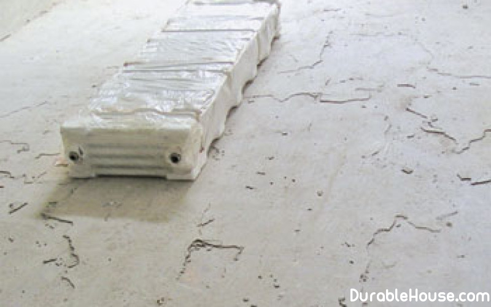

Subfloor preparation - nuances
Modern floor, like any other design in the house, is constantly under Close attention of civil engineers. And it's not just about the emergence of new Floor materials, but also on the modernization of old, and the improvement of their processes Stacking.
Scientists and masters,
Professionally engaged in finishing the floor, tirelessly repeat that "floor" is not only
What we see after the repair. The floor is not a parquet or linoleum, it's a system,
Has its own rules of installation and does not forgive mistakes and negligence.
Begin the floor
Work with thorough preparation of the foundation. Its quality is directly related to how it will be
Look your floor in the finished form.
Universal advice on the choice of mixtures, primers or
Resins do not exist here, each material that has been tested and approved for use,
Necessarily find its buyer, it is important only to apply it correctly, maximally
Using its properties, not expecting to get what it is not adapted for. For example,
If you are in a damp room using a beautiful but not water-resistant remedy, get
A big problem. The same can be said about the choice of means for problematic
Bases.
Buying inexpensive, budgetary materials, it is not necessary to count on
Brilliant result, we must adequately perceive these products and not put before them
Super-targets. They solve their tasks, even if they are not long-term ones.
As an example, we
Decided to take the materials of the German company UZIN, firstly, because they really
Quality, and secondly, this manufacturer has a wide range of products, within the framework of
Which easily solve any problems.
Первый этап. Экспертиза основания
First step. Ground examination
- Strength of the base for compression (for cement screeds not less than 15 MPa);
- Residual moisture of the substrate (no more than 2% CM);
- Flatness of the base (for cement screeds the gap is not more than 6 mm per 2 m);
- The presence of cracks and defects (opening crack, movable cracks, potholes, lenses, Exfoliation);
- The construction of the base (the presence of heat and sound insulation, pipelines, communications, Vapor barrier);
- The presence (if necessary) of joints in the base (deformation, erection, Damper, temperature).
Second phase. Repair and preparation of the foundation
If the surface of the base at least approximately corresponds to the norms, then it is necessary:
- Grind the ground and dust it off (photo 1, 2, 3);
- Treat moving cracks, potholes, crack openings, shallow lenses;
- Primer the entire surface of the mineral base with UZIN PE 360 primer (150 g / m2) and After drying (15-60 minutes), perform equalization with a self-leveling mass.
If your base has increased residual moisture, its repair is performed as follows Way:
- Base is ground and dust-free;
- All movable cracks, potholes, cracking openings, shallow lenses are treated;
- The entire surface of the mineral substrate is treated with a UZIN PE 460 primer (400 g / m2). After the first layer has dried (12 hours), a second coat of primer is applied and until it dries Sprinkled with quartz sand fractions of 0.3-0.8 mm.
After drying, uncombined sand is removed with a brush, and then with an industrial vacuum cleaner. By
The self-leveling mass is poured into the base.
Preparing the base with
Residues of bitumen
- First, grinding the base with a single-disk grinder or milling machine, Using disks with tungsten carbide nozzles;
- Then the base is dedusted and treated with mobile cracks, potholes, cracks Openings and shallow lenses;
- The entire surface of the mineral substrate is treated with a UZIN PE 260 primer (100 g / m2) And after drying (60-80 min.), The self-leveling mass UZIN NC 110 (1.4 kg / m2 per 1 mm layer) with a thickness of up to 6 mm.
Preparation of mosaic floors and floors covered with ceramic tiles
- Grinding and dedusting of the substrate is performed;
- Mobile cracks, potholes, cracked openings and shallow lenses are treated;
- The entire surface of the mineral base is treated with a two-component putty A primer UZIN PE 630 (100-600 g / m2). After drying (90-120 min.), The surface Equalized by a self-leveling mass.
Having received the basis that meets all technical requirements, you can start installing Floor covering. How it will be - your choice, however, one can say with certainty: And parquet, and laminate, and the usual wooden floor in this case will serve for a long time, in many respects Thanks to properly conducted draft work.